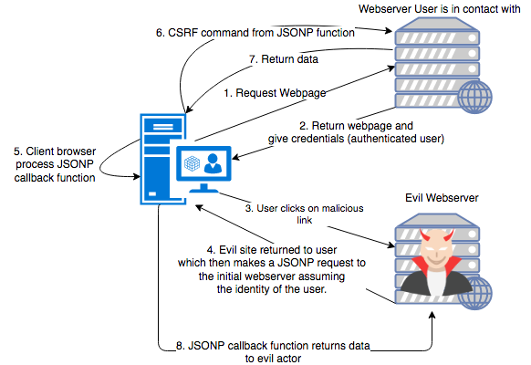

A cross site request forgery vulnerability is a cross site mechanism that can force a victim's browser to send an authenticated web request. In a successful attack, the victim's browser sends a malicious request (crafted by the attacker) to a web site and the web site handles it as if the victim requested it directly. This is a similar vulnerability to cross site scripting because it involves exploitation of trust between web sites and web browsers. However, cross site request forgery exploits a web site's trust of an authenticated user's browsing session, whereas cross site scripting exploits the trust a user has for a web site's content.
JSON, or JavaScript Object Notation is a commonly known data format for web applications. JSONP stands for JSON with Padding, where the "padding" is a specified JavaScript callback function. Developers decided to use JSONP to get around web browsers' Same Origin Policy, which specifies that requests for data cannot be made to URLS of a different domain , protocol, or port. For example, a browser rendering https://foo.com cannot make a request to https://api.foo.com because they have different origins. The workaround to this is to wrap the desired JSON in a JavaScript function, and then have the browser render a <script> tag where the src attribute is the URI. The returned JSON and JavaScript function is then rendered by the client's browser, bypassing the Same Origin Policy.
Before we get into details, let's take a look at a valid use of JSONP, and get a little bit of history about why it was used. In the early 2000s there were no protections against cross origin data requests. This meant that you could grab information from any server with XMLHttpRequests, which was a much desired feature for developing websites. This let you shift getting data from external APIs to the front end, instead of having to set up a backend service to fetch it. This was a form of shifting work onto the client, reducing the server costs for hosts.
Developers soon discovered that it's a security risk to allow fetching data from other webservers was dangerous in the front end, so all browsers implemented a Same Origin Policy (SOP). This blocked browsers from rendering content from websites that make requests to URIs that aren't of the same origin (domain, port, and protocol).
In response, developers decided to circumnavigate the SOP by inserting the desired return data as an argument to a function call, and returning that to the user. This meant that they could sneak their data in over the script tag. Here's an example of a legitimate use of JSONP.
The client first visits a page, which returns HTML that includes a script tag to call an external server. That external server then returns the data wrapped in a callback function, which is ran by the client's browser.
The objective of this exercise is to craft an evil page that a client would click on, which would then make a call to another server they are authenticated with, collect data, and return it to the malicious server.
Here is a diagram representing the attack. In this diagram, the first step is for the user to authenticate with a website. Then, the user needs to click on a link to a malicious HTML page, which will be rendered by the client's browser. The malicious HTML, when rendered, will fetch data from the vulnerable server and then send it to the malicious webserver.

In this exercise, we provide a two small HTTP servers developed using Flask, a python HTTP microframework. The first server, vulnerable.py, returns static JSON wrapped in a provided callback function to anyone who makes a GET request to it. The second server, evil.py, provides an evil HTML file that will send data from the user's browser to the evil webserver. These naive servers do not have any form of authentication or support querying data. For the purposes of this exercise, we will not consider the implications of these traits. Instead,we will focus on the potential for cross site request forgery. Your objective is to craft a request forgery that will act on behalf of the client to send data from the vulnerable web server to malicious web server.
The program has three source files: vulnerable.py, evil.py, and templates/index.html. The first server, vulnerable.py, will run on localhost:5000 while the second, evil.py, will run on localhost:5001. The following table summarizes each file's purpose.
| Filename | URL Path | Description |
|---|---|---|
vulnerable.py |
localhost:5000 |
Returns JSONP to a calling client. You will need to change this file to complete the mitigation. |
evil.py |
localhost:5001 |
Returns to the client a malicious HTML page that will exploit a vulnerable JSONP serving server. You will need to change this file to complete the exploit. |
templates/evil.html |
localhost:5001 |
This is the malicious HTML returned to the client when evil.py's root route is visited. You will need to change this file to complete the exploit. |
mitigated.py |
localhost:5002 |
Server to be used to demonstate the mitigation of a JSONP attack. You will need to modify this file to complete the mitigation. |
templates/mitigated.html |
localhost:5002 |
Webpage rendered by mitigated.py, which accesses data from localhost:5000 without JSONP. |
The goal of JSONP is to render data from a different origin. Our goal is to maintain the same end result, but doing so securely. To do this, we will set up a proxy to fetch the desired data in the backend within the same origin, and then return that to the front end. Thus, we are shifting the load of getting data from the client onto our webserver.
This exercise will be completed in the web browser and on the command line terminal of the provided virtual machine. To open the terminal, right-click on the EXERCISES directory and select Open in Terminal. Then open one more terminal tab with ctrl+shift+t to have two tabs running. Enter the following command in each tab to change into the exercise directory:
$ cd 3.9.3_JSONPPython interprets your code at runtime, so there is no compilation step.
You will need to run one server in one terminal tab, and another in the other terminal tab. In the first terminal window, enter the following:
$ python3 vulnerable.pyYou should then see the following:
* Serving Flask app "<name of server>" (lazy loading)
* Environment: production
WARNING: Do not use the development server in a production environment.
Use a production WSGI server instead.
* Debug mode: off
* Running on http://127.0.0.1:5001/ (Press CTRL+C to quit)
Your terminal should be taken over.
In the second terminal tab, run the other server the same way:
$ python3 evil.pyYou will again see similar output.
To stop either server, type ctrl+c in the command line interface. Currently, vulnerable.py does not have a web interface. If you visit localhost:5000, you JSONP will be returned and be visible in the top left corner of your screen. The server is in place to simply return JSONP as a contrived example of what a production webserver may do. However, the evil webserver, evil.py has a web interface that you can visit by going to localhost:5001 while localhost:5000 is running.
To view the web site, open Firefox by clicking the globe icon in the bottom left hand corner of the screen. The malicious server is attached to http://localhost:5001.
Note: A very simple but valuable tool is Firefox's Web Developer tools. In particular, the Network tab will provide some more insight as to how the application works. You can access this by pressing Ctrl+Shift+E when in the Firefox browser. Every time you load a page, you will see the HTTP requests that were sent to get there. Try this while clicking the link after logging into the site. You should see two requests, one directed at the "action" url and one directed at the "view" url.
Now that you understand the basic behavior of the program, it's time to look at the implementation. As mentioned above, this program is implemented in three files. Use your favorite text editor to open them. Enter the following command to open each file in vi:
$ vi vulnerable.py
$ vi evil.py
$ vi templates/index.htmlAs you look through the code and trace the diagram, start to consider the following questions: what could I do if I had access to specify a callback function? What could a malicious user do if this attack used session tokens as cookies?
You will have a successful exploit if you can have a user visit the malicious page, which will trigger the data from vulnerable.py to appear in stdout of the terminal window running evil.py. To complete this exploit, you will need to modify evil.py and templates/evil.html
To test this exploit, we will need three things: the vulnerable server, the malicious webserver, and a malicious webpage. First, run the server as we did in Run the Program. Next, edit templates/evil.html to include our malicious src URI (this should include the URI to the vulnerable webserver, as well as a callback parameter ?callback=<function you'd like to run>). Showing you have access to specify a callback function is cool, but what nasty things can we do with it? Try using the fetch API to POST data to the malicious webserver. Now, make sure you can see the evil.py server command line interface while you open localhost:5001 in one browser tab.
Congratulations! You've exploited JSONP on a vulnerable server!
A successful mitigation of this exploit will have a webpage that will be able to render the data from localhost:5000 (vulnerable.py) without using JSONP. You will need to modify vulnerable.py, templates/mitigated.html, and mitigated.py.
To mitigate this attack, we will have to restructure the architecture of our application. We need to restrict front end requests to a webserver in the same origin. This means that we will have to set up an endpoint to access an external API. In mitigated.py, lets access the data returned by vulnerable.py without using JSONP. All that is needed to change in vulnerable.py is removing the @jsonp annotation. Simply returning the JSON will suffice for the test() function. In mitigated.py, use the requests library to implement an API call to localhost:5000(vulnerable.py), and then return that to the front end for Flask to render. To communicate data from the backend to the front end, you will need to use the render_template method from Flask. Here is an example of communicating data from the backend to the front end:
# this is the Flask backend
from flask import Flask, render_template
...
...
def run():
...
return render_template('mitigated.html', dataToTheFrontEnd=<data you'd like to return to front end>)
mitigated.html, you can access the returned data like so:
<!-- This is the front end HTML. Flask will use a templating engine (jinja2)
to render the HTML and serve it to the front end. -->
<p> Your data is: {{ dataToTheFrontEnd }} </p>
dataToTheFrontEnd, is referenced in between the {{ }} brackets.
Congratulations! You have mitigated the JSONP vulnerability!